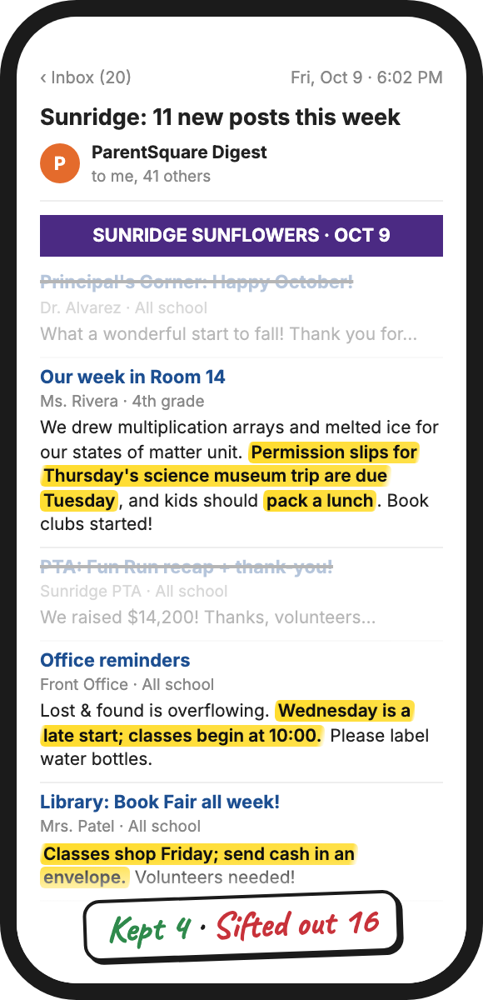
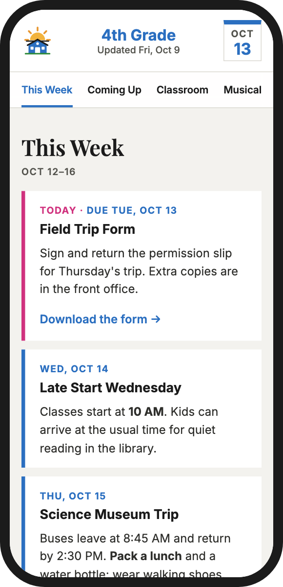
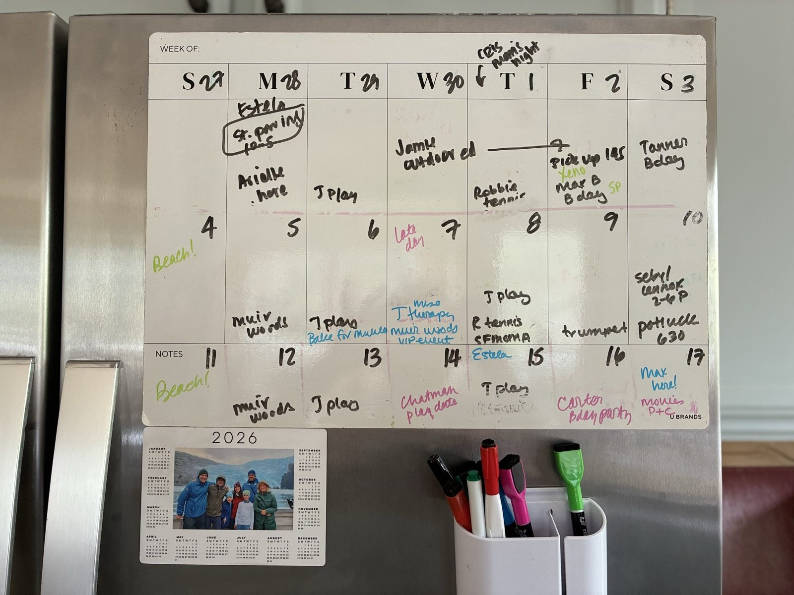

From 20 emails a week to only what's Fridge-Worthy
An open-source guide to taming school communications.
Turn this into this
One week of school email for a made-up 4th grader. Four things in it need you. Can you find them?
Turn this…

The one rule
Would a parent change their schedule, prepare their child, or do something?
If not, it stays off the page.
…into this

- Built to read in seconds on a phone. Short cards, what to do first, and past items disappear on their own.
- Looks like your school. Your agent can use your school's colors and logo, and your class's own sections.
…then onto fridge or calendar
WEEK OF: Oct 12
Or have your agent add them to your digital calendar.

You can build this. No subscription, no new app: a prompt, a free account, and an hour.
Pick your setup
All three share the same rules: the relevance test, how to handle sources that disagree, and what never gets published. All handle more than one kid.
Chat
Paste the week's emails into a Claude or ChatGPT project. Get back a short list of what needs your attention for each kid, plus dates to add to your calendar.
Paste it into a Claude or ChatGPT project's instructions.
Page
Your coding agent turns the week's emails into a private, phone-friendly web page you can share with your class.
Autopilot
School email and digests flow straight in. The page updates itself, so it's current whenever anyone looks.
The details
The problemAbout 20 emails a week, plus app alerts and texts
School news comes from everywhere: the weekly newsletter, emails from the school, notes from the class parent, ParentSquare, teacher posts, team apps. About 20 emails a week for my family, plus app alerts and texts. And that's after I left the class WhatsApps.
Maybe three of those 20 ask me to do anything. Those are the ones I can't miss, though. They're buried in paragraph six of a newsletter, or in a mid-week digest that changes last week's date.
So I built a system for my kids' classes that pulls out only what matters for my family and throws away the rest. Here's a simple open-source guide if you want to set one up for yours.
Privacy, safety, and under the hoodWhat I recommend · How the page stays accurate
What I recommend
Whichever setup you choose:
- Keep kids' names offKeep a private list of names you never want shown, and have your build check against it.
- Keep your copy privateUse a private repo. Never put class emails or content anywhere public.
- Tie every item to its emailHave each item quote the email it came from, so dates and links trace back to the source.
- For Autopilot, limit what gets inAccept mail only from senders you list, allow links only to sites you trust, and email yourself each change so you can undo it.
- Password-protect shared pagesAdd a password gate and keep the page out of search engines.
- In Chat, mind what you pasteTurn off model training in your chat app, and remove kids' names before pasting.
How the page stays accurate
- Past items disappearYesterday's deadline is gone this morning, without anyone editing anything.
- "Today" means the school's todayDates follow the school's time zone, even for a parent traveling.
- Stale warningIf eight days pass without an update, the page says so. A broken job can't hide.
- Mistakes stop at the buildA typo in a date or a weekday that doesn't match fails the build before parents see it.
QuestionsCost, school apps, AI tools, mistakes
- Is this affiliated with my school?
- No. It's a personal project, not connected to any school or company. Use your school's name and logo only with its OK.
- Does it cost anything?
- No new app to buy. Hosting is free on Cloudflare, and Chat works with the free versions of Claude or ChatGPT. Autopilot may need a domain (about $10–20 a year) and pay-as-you-go AI calls.
- Will you host or run mine?
- No. Each parent runs their own copy on their own account.
- Which school apps does it work with?
- Anything that ends up as email or text you can copy: newsletters, ParentSquare, Brightwheel, Konstella, SchoolMessenger, teacher emails.
- Which AI tools?
- Chat works in Claude or ChatGPT. Page and Autopilot work with any coding agent that can read a repo, such as Claude Code, Cursor, or Codex.
- What if it gets something wrong?
- It will sometimes. The guides recommend tying every item to the email it came from and flagging borderline items. The school's own message is always the final word.
Why I'm sharing thisFrom one parent to another
I'm a parent in the community doing my best, and so is everybody else.
It's been a real help to me. I shared the page with my kids' classes, and the other parents have been so grateful.
None of this needs a paid product. It's very buildable, and the more of us who build and share, the easier it gets for everyone to sift through the noise and get it all done.
If one parent in each community sets one up, a lot of families get time back. Other parents have helped me so much along the way. This is my way of giving back to my village, and to the bigger parent village.